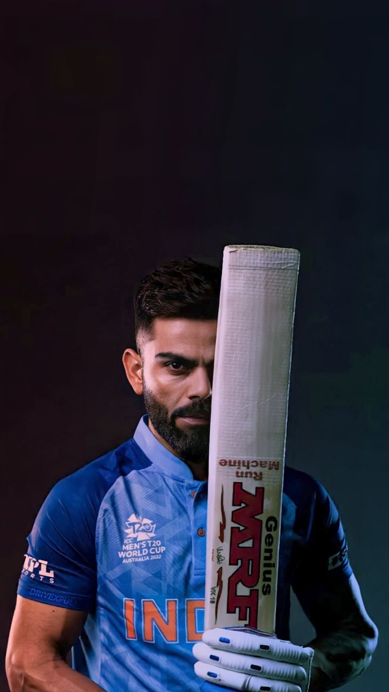

| Born |
1988 |

|
- Among Indian batsmen, boasts the best ever Test rating (937 points), ODI rating (911 points)
and T2OI rating (897 points).
|
| Birthplace |
Delhi |
-
In August 2019, became the first cricketer to score 20,000 international runs in a decade,
beating Ricky Ponting's record of 18,962 runs in the 2000s
|
| International 100s/50s |
69/98 |
-
Is the only Indian in the latest 'Forbes' list of the world's highest-paid athletes with
estimated annual earnings of $25 million (world rank 100).
|
| Major Teams |
India,Delhi,India Under-19s,Royal Challengers Bangalore |
-
Business ventures include FC Goa (ISL team), CHISEL (fitness chain) and Wrogn (fashion
brand).
|
| Notable Awards |
ICC Cricketer of the Year (2017,2018), ICC Test Player of the Year (2018), ICC ODI Player of the
Year (2012,2017,2018), Arjuna Award (2013), Padma Shri (2017), Rajiv Gandhi Khel Ratna (2018) |
-
In 2013, ICC declared him the cricketer of the year, making him the youngest player to
achieve this feat at 23.
|